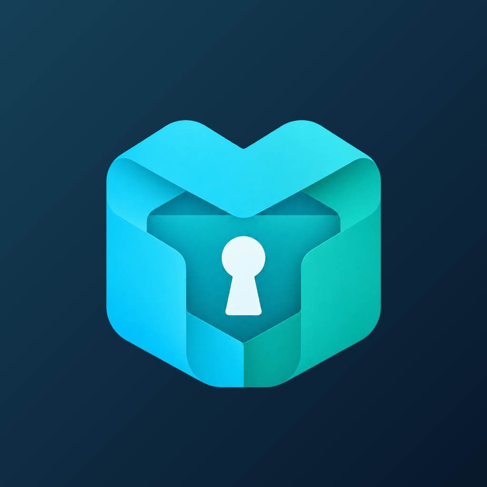

加密导入 · 离线使用
把秘匣带到电脑
默认直接打开验证码，也可主动开启锁屏密码。手机备份密码会在选择文件后单独输入。
锁屏密码默认关闭，可在导入后随时开启。
我的验证码
从一份加密备份开始
可选择手机秘匣或电脑插件导出的加密备份。
- 秘匣 → 设置 → 导出加密备份
- 通过微信文件、数据线等方式保存到电脑
- 选择文件，输入导出时设置的备份密码
没有找到匹配的账户。

秘匣0默认直接打开验证码，也可主动开启锁屏密码。手机备份密码会在选择文件后单独输入。
锁屏密码默认关闭，可在导入后随时开启。
可选择手机秘匣或电脑插件导出的加密备份。
没有找到匹配的账户。